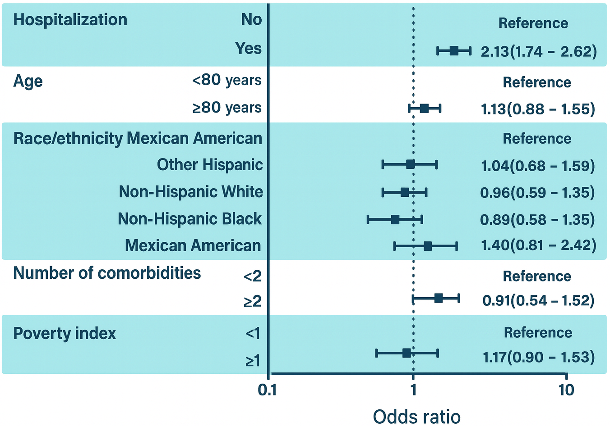
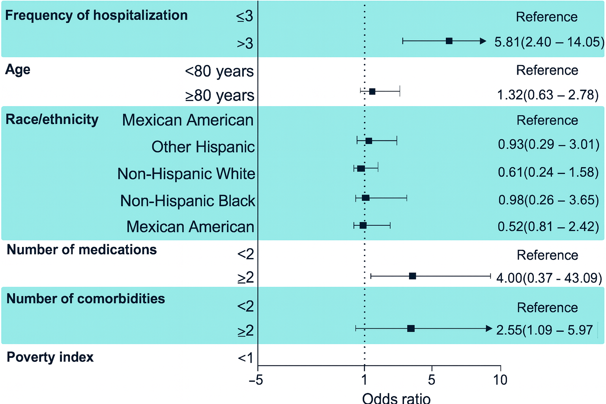
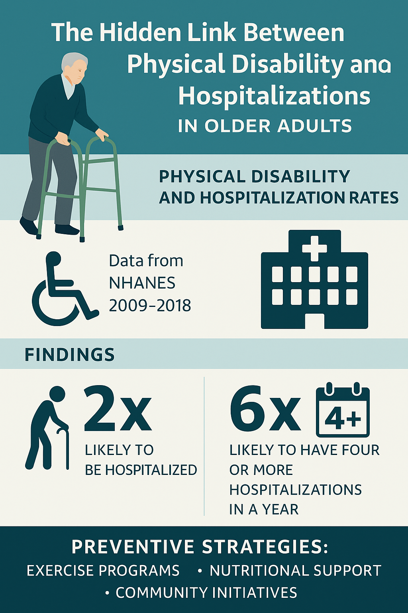

Research Findings🔍🧑‍🔬
As our global population ages, understanding the factors that influence health and well-being becomes increasingly important.
A recent study analyzing data from over 4,300 adults aged 65 and older revealed a striking connection between physical disability and hospitalization rates.
The research, based on data from the U.S. National Health and Nutrition Examination Survey (NHANES) from 2009 to 2018, found that older adults with any level of physical disability were twice as likely to be hospitalized compared to those without disabilities.
Even more concerning, individuals with disabilities had almost six times the odds of being hospitalized four or more times in a single year.

LOOK THE RESULTS!🤓
Associations Between Disability with Hospitalization

Associations Between Disability with Frequency of Hospitalization

These findings highlight how vital it is to maintain physical function in later life. Simple daily activities like walking across a room, standing from a chair, eating, and dressing are more than just routines—they are key indicators of overall health.
When these functions decline, the risk of hospital admissions and repeated readmissions rises significantly.
